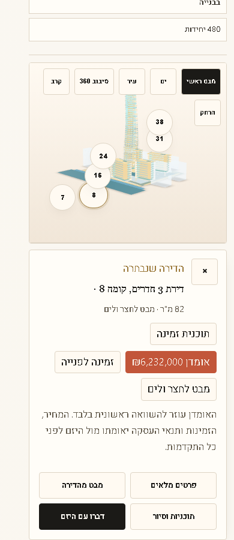
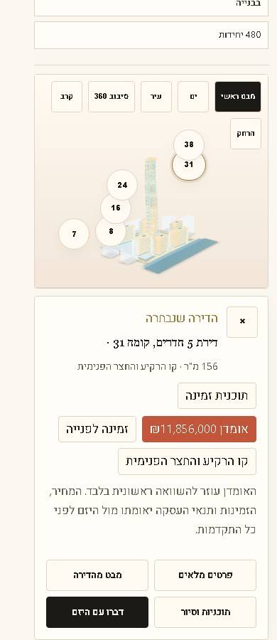
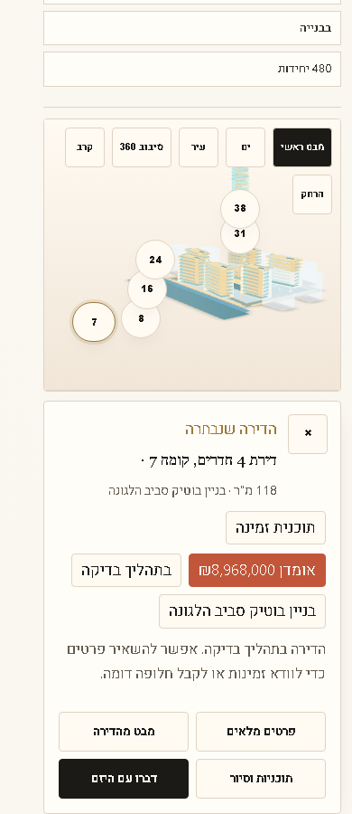

Mobile raw model-surface tapTap lands on the model surface, selects unit 8, highlights the unit, and opens the selected apartment card.
Live critical check for apartment selection on the Rainbow 3D showroom. This report records what was tested, what passed, and what remains limited by the current model assets.
| Check | Status | Evidence |
|---|---|---|
| Live healthcheck version | Pass | version: 1.69.30 |
| New fallback flag | Pass | model_surface_mobile_screen_fallback_v16930: true |
| Visible apartment buttons, desktop | Pass | 6 of 6 units selected |
| Visible apartment buttons, mobile | Pass | 6 of 6 units selected |
| Raw model-surface tap, desktop | Pass | Selected unit-08-sw, camera orbit and target changed |
| Raw model-surface tap, mobile | Pass | Selected unit-08-sw, camera orbit and target changed |
| Mobile free-tap grid | Pass | No dead model-surface points |
| Public-language leak scan | Pass | No internal agent, prompt, token, GLB, SVG, Featured, Sponsored, or similar terms found |

Mobile raw model-surface tapTap lands on the model surface, selects unit 8, highlights the unit, and opens the selected apartment card.

Mobile grid sampleTap near the right side of the model selects a higher floor unit and changes camera focus.

Visible apartment buttonsAll authored visible unit controls are tappable on mobile and resolve to their own units.
This works for the current Rainbow GLB and unit map: visible apartment targets work, raw model-surface taps select a nearby authored unit, and the camera moves. It is still not exact window-by-window BIM picking. That requires an official segmented GLB, object IDs, BIM or IFC mapping, or contractor-provided apartment-level geometry.